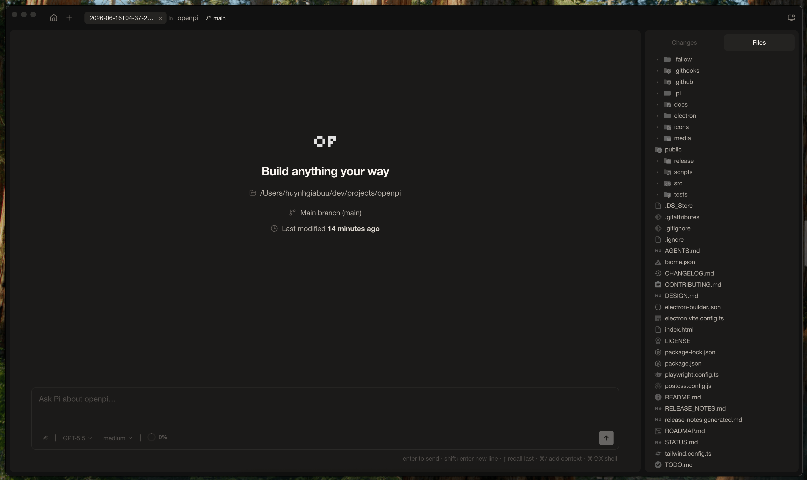

DATA · 一眼看懂
PAGE 01
OpenPi 的公开信号
133GitHub stars
11Forks
TSLanguage
MITLicense
OpenPi 不是把 Pi 的 agent runtime 重新写一遍，而是把 @earendil-works/pi-coding-agent 装进 Electron 主进程，再用本地桌面 UI 包住会话、扩展、文件搜索、源码控制、diff 和终端。它的价值在于：把 agent 能力从“网页里的聊天框”推进到“可持续工作的桌面工作台”。
界面只收集意图和渲染状态，不直接碰文件系统、Shell、Git 或 Pi 内部细节。
主进程负责 PTY、Git、SQLite、文件搜索、应用元信息和原生对话框，确保桌面能力有真正的权限边界。
会话树、压缩、队列、tools、extensions、providers 和模型行为，继续由 Pi SDK 统一掌管。OpenPi 的策略不是抢语义，而是把语义包进更适合长期工作的桌面壳里。
这条边界很重要：它让 OpenPi 能快速接入 Pi 的能力，同时避免把一个桌面产品做成“重写 runtime”的高风险分叉。
OpenPi 的关键价值，不在于更换模型，而在于重新分配职责：前端只做交互，主进程做权限，SDK 做语义。这样一来，agent 可以稳定地跟文件、Git、终端、扩展和子 agent 连在一起，形成真正的工作闭环。
对正在做 AI 桌面产品、开发者工具或 agent workbench 的团队，这种边界设计比某个单点功能更值得抄作业。

这张图来自仓库 README 的公开演示图，已经本地化进卡片正文，用来对应“桌面工作台”的产品定位，而不是只放一行抽象描述。
它给出的不是某个炫技特性，而是一个可复用的分层方法：UI 只负责表达，主进程负责动作，SDK 负责 agent 语义。这个结构，能把很多“看起来能演示”的 agent 产品，推向“真的能长期工作”的桌面工具。
白底、深蓝单强调、大数字、细灰线——这些大白风语法不是装饰，而是把 repo 的信息密度做成可扫读的商业报告。OpenPi 的叙述方式，恰好适合这种“先结构，再能力，再判断”的页式表达。